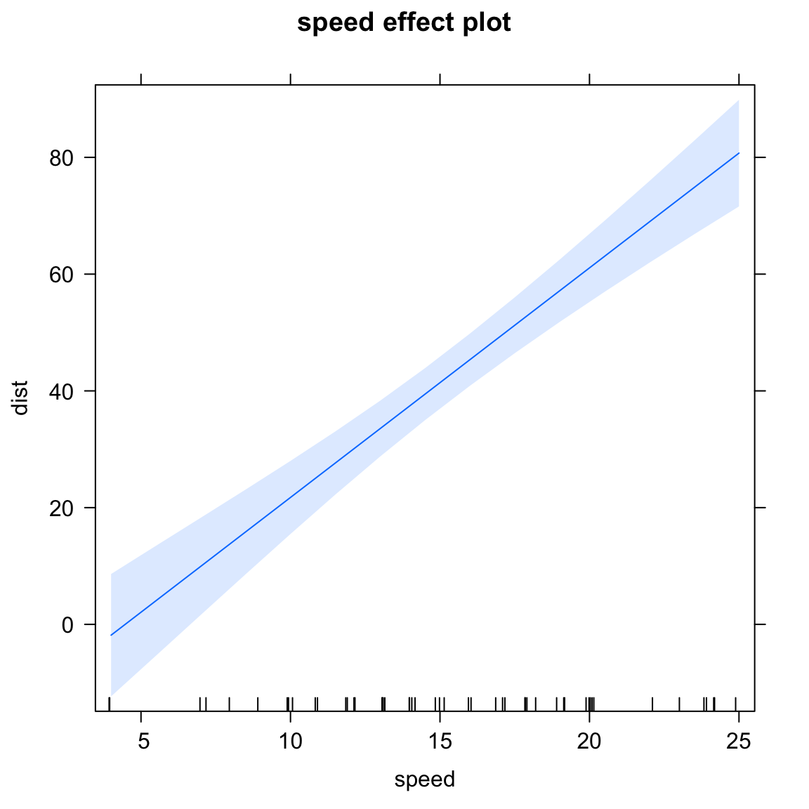
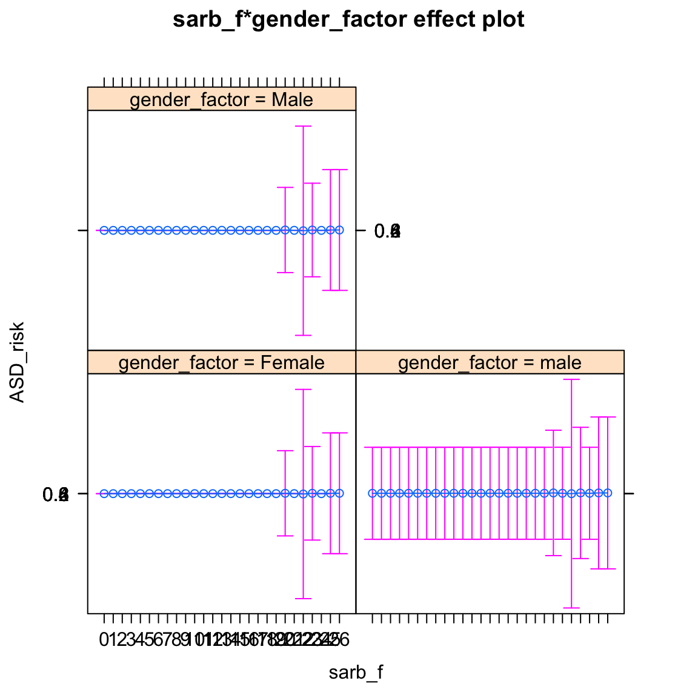

mean(cars$speed, na.rm = TRUE)## [1] 15.4median(cars$dist, na.rm = TRUE)## [1] 36sd(cars$speed, na.rm = TRUE)## [1] 5.287644summary(cars)## speed dist
## Min. : 4.0 Min. : 2.00
## 1st Qu.:12.0 1st Qu.: 26.00
## Median :15.0 Median : 36.00
## Mean :15.4 Mean : 42.98
## 3rd Qu.:19.0 3rd Qu.: 56.00
## Max. :25.0 Max. :120.00cor.test(mtcars$wt, mtcars$disp)##
## Pearson's product-moment correlation
##
## data: mtcars$wt and mtcars$disp
## t = 10.576, df = 30, p-value = 1.222e-11
## alternative hypothesis: true correlation is not equal to 0
## 95 percent confidence interval:
## 0.7811586 0.9442902
## sample estimates:
## cor
## 0.8879799linearMod <-lm(dist ~ speed, cars)
print(linearMod)##
## Call:
## lm(formula = dist ~ speed, data = cars)
##
## Coefficients:
## (Intercept) speed
## -17.579 3.932# create effects object
eff <- effects::Effect('speed', linearMod)
eff##
## speed effect
## speed
## 4 9.2 14 20 25
## -1.84946 18.59907 37.47463 61.06908 80.73112plot(eff)
adosm1$ASD_risk <- as.factor(adosm1$recruitment_group == 'ASD risk')
adosm1$sarb_f <- as.factor(adosm1$ados_sarb_total)
adosm1$gender_factor <- as.factor(adosm1$gender)
adosm1$recruitment_group_f <- as.factor(adosm1$recruitment_group)
logMod <-
glm(ASD_risk ~ sarb_f + gender_factor,
adosm1, family = 'binomial')
logMod##
## Call: glm(formula = ASD_risk ~ sarb_f + gender_factor, family = "binomial",
## data = adosm1)
##
## Coefficients:
## (Intercept) sarb_f1 sarb_f2
## -0.3815 0.1500 0.2267
## sarb_f3 sarb_f4 sarb_f5
## 0.8868 1.1712 1.5137
## sarb_f6 sarb_f7 sarb_f8
## 1.5840 0.6224 1.1274
## sarb_f9 sarb_f10 sarb_f11
## 2.6826 1.8771 0.7671
## sarb_f12 sarb_f13 sarb_f14
## 1.1296 3.2461 2.0244
## sarb_f15 sarb_f16 sarb_f17
## 2.0005 1.1525 1.6009
## sarb_f18 sarb_f19 sarb_f20
## 1.6125 0.4841 17.1203
## sarb_f21 sarb_f22 sarb_f23
## 2.3623 -16.1846 16.9476
## sarb_f24 sarb_f25 sarb_f26
## 0.4669 16.9476 17.2042
## gender_factormale gender_factorMale
## 15.9578 -0.2566
##
## Degrees of Freedom: 1010 Total (i.e. Null); 982 Residual
## (13 observations deleted due to missingness)
## Null Deviance: 1365
## Residual Deviance: 1247 AIC: 1305plot(effects::Effect(c('sarb_f', 'gender_factor'), logMod))